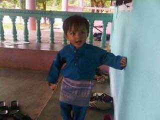
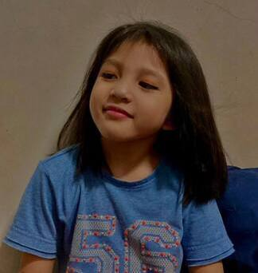

Family is an important part of my life. My family consisted of my mother, father, and four younger siblings. I can't imagine being a single child or growing up without them. My parents and siblings have all influenced who I am today. My family is unique in that we are all down to earth and sensible, and we can always do whatever is required. We've managed to keep moving forward and staying close despite our difficulties. I owe it to my parents for raising us in that manner.
I have a mother and a father. Faizal bin Shamsuddin is my father's name, and Norma binti Ahmad is my mother's. My father is 50 years old, and my mother is 45. They are always available to me when I need them. When I'm sick, they make me smile, which makes me feel better. My parents are wonderful people who prioritise the care of my siblings and me. They are always there for me, no matter what. Let's start with my mother, who is wonderful. My mother is always cheerful, and she can put a smile on anyone's face. She will also never let you down. If she says something, she means it. She is very spontaneous and outgoing, and she makes fantastic plans to make the day perfect. When she's in the mood, she always makes things crazy. She is also a great source of encouragement in my life. I will definitely try to follow in her footsteps.
Now, my father is, let's just say, the best father you could ever have. He is very intelligent, which comes in handy when it comes to mechanical things, which I am terrible at. He is also very encouraging; he knows what is best for me, which is a good thing. I could always use a good kick in the buttocks. He also works very hard; he RARELY abandons a project before it is completed. He has great qualities as well, which I happen to have a lot of. He also knows how to have a good time, especially when I'm around. I don't think it ever stops when we're having fun, but it can't hurt.
My second and third sisters are here. Siti Masturina binti Faizal and Siti Marissa Farzana binti Faizal are their names. Marissa is 14 years old and Masturina is 18 years old. I needed to be a role model for them and someone they could look up to. I had to take on the role of the older sibling that my sister had played for me. I needed to figure out how to be a good older sister to them. I had the best older sister's footstep to follow, so I knew I'd be fine in the end. Everything was going to be all right.
My two sisters have excellent personalities. They both insult no one and dislike those who talk nonsense. They are focused on their studies. Their memory is excellent. As a result, they consistently perform well in school exams. That is why their teachers adore them, their classmates look up to them, and everyone in our family adores my sisters.

I am fortunate to have a younger brother. I adore him to pieces. He is 12 years old and very mischievous. Muhammad Ahnaf Faris bin Faizal is his name. When we got a little older, the little fights turned into bullying and pulling each other's legs. It was enjoyable to pull each other's legs when given the opportunity. Going to school and back was a lot of fun, especially with all of the pranks we used to play on the people we met and with our friends.

I have a seven-year-old younger sister. Siti Mysha Sakeena binti Faizal is her name. She is my entire world, and I cannot function without her. I couldn't stop smiling when I found out I was a big sister for the first time. When she was a baby, I remember playing with her all day. Furthermore, she is the one who helps me understand things when I can't see them clearly. She also makes everyone in our family laugh with her adorable antics. Because she is the youngest member of my family, everyone in my family adores her.
“Family is not an important thing. It's everything.”